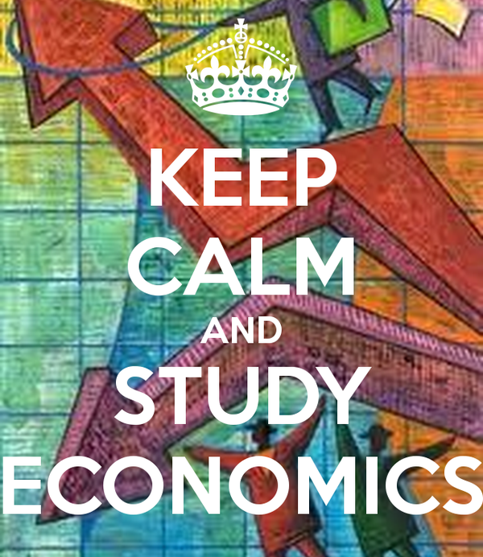

Introduction to Economics
There are four types of resources
- Land: paid with rent and mortgage
- Labor: pay with salary, tips, wages, or commission, depending on the job.
- Capital: pay with principal or interest
- Entrepreneurship: pay with profit or loss depending success of a business.
What are the six core principles of economics?
- People make choices
- People's choices have costs, also known as opportunity cost.
- People respond to incentives in predictable ways.
- People create systems that influence choices.
- People gain when there is voluntary exchange.
- People's choices have consequences that lie in the future.
Key Assumptions in Economics
- People are rationally self interested
- People seek to maximize utility
- People make decisions at the margin
- People weigh marginal benefits against the marginal costs
- All factors are constant except what is being considered
